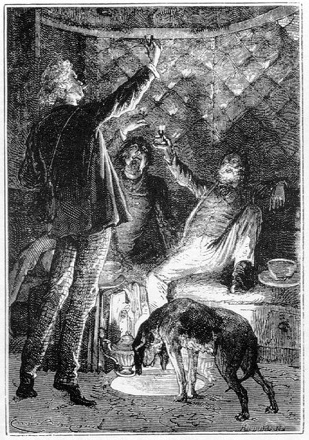
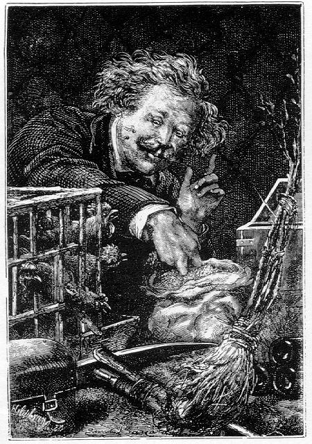

Capítol III
LA INSTAL·LACIÓ
Un cop donada aquesta explicació,
certament tan curiosa com exacta, els tres amics tornaren a caure en un son
profund. Per a dormir, ¿on haurien pogut trobat un lloc més calmós
en un medi més plaent? A la terra, les cases de les ciutats, com les
cabanes dels camps, totes senten les sotragades que dóna l'escorça
del globus. A la mar, la nau, pilotejada per les onades, tota ella no és
res més que topades i moviments. A l'aire, el globus oscil·la
a cada moment damunt les capes fluides de diverses densitats. Només aquell
projectil, flotant en el buit absolut i enmig d'un silenci absolut, oferia als
seus hostes el repòs absolut.
Així és que el son dels tres viatgers tal vegada s'hauria allargat
indefinidament si una remor inesperada no els hagués desvetllat, cap
a les set del matí del 2 de desembre, vuit hores després de la
seva sortida.
Aquella remor era un lladruc molt caracteritzat.
-Els gossos! Són els gossos!... - exclamà Miquel Ardan, aixecant-se
tot seguit.
-Tenen fam - digué Nicholl.
-Ja ho crec! - respongué Miquel -, els hem oblidats!
-On són? - preguntà Barbicane.
Es posaren a cercar i trobaren un dels dos animals arraulit dessota el divan.
Espantat, anorreat pel sotrac inicial, havia romàs en aquell racó
fins al moment en què la veu li revingué amb el sentiment de la
fam.
Era la festosa Diana, bastant encorreguda encara, que va estirar-se fora del
seu cau, no pas sense fer-se pregar. Mentrestant, Miquel Ardan l'encoratjava
amb les seves més gracioses paraules:
-Vine, Diana - li deia -, vine filla meva! Tu, a qui el destí assenyalarà
en els annals cinegètics! Tu, a qui els pagans donaren per companya al
déu Anubis, i els cristians per amiga a sant Roc! Tu, que ets digna d'ésser
forjada en aram pel rei dels inferns, com aquell quisso que Júpiter cedí
a la bella Europa pel preu d'un bes! Tu, a qui la celebritat eclipsarà
a aquella dels herois de Montargis i de Sant Bernat! Tu, que llançant-te
cap als espais interplanetaris, seràs, tal vegada, l'Eva dels gossos
selenites! Tu, que justificaràs allí dalt aquelles paraules de
Toussenel: "En el principi Déu creà l'home, i, veient-lo
tan feble, va donar-li el gos". Vine, Diana, vine aquí!
Diana, afalagada o no, avançava a poc a poc tot fent uns gemecs planyívols.
-Bo! - féu Barbicane -, jo bé veig Eva, però ¿on
és Adam?
-Adam! - respongué Miquel -, Adam no pot ésser lluny! Deu estar
en algun lloc! Cal cridar-lo. Satèl·lit! Aquí, Satèl·lit!
Però Satèl·lit no apareixia i Diana continuava gemegant.
Mentrestant, havent-se vist que no estava gens ferida, li serviren un bon plat
d'una mescla de pa i carn que féu cessar els seus planys.
Quant a Satèl·lit, semblava introbable. Calgué cercar-lo
molt de temps abans no fou descobert en un dels compartiments superiors del
projectil on el xoc l'havia rebatut violentament. La pobra bèstia, molt
danyada, romania en un estat llastimós .
-Diable! - digué Miquel -, heus aquí compromesa la nostra aclimatació!
Davallaren el pobre gos amb molt de compte. El seu cap s'havia fet a trossos
contra la volta i semblava difícil que revingués d'un tal xoc.
Malgrat tot, fou confortablement estès damunt un coixí, i allí
deixà escapar un sospir.
-Nosaltres et curarem - digué Miquel -. Som responsables de la teva existència.
Més m'estimaria perdre un braç que no una pota del meu pobre Satèl·lit!
I, dient això, oferí alguns glops d'aigua a la bèstia ferida,
que els begué àvidament.
Després d'aquestes atencions, els viatgers observaren atentament la Terra
i la Lluna. La Terra només estava figurada per un disc cendrós
que acabava en un arc més reduït que la vetlla; però el seu
volum era encara enorme si es comparava amb el de la Lluna, que s'acostava més
i més a un cercle perfecte.
-Anem! - digué llavors Miquel Ardan -, estic vertaderament disgustat
que no hàgim partit al moment de Terra plena, o sigui quan el nostre
globus es trobava en oposició amb el Sol.
-Per què - preguntà Nicholl.
-Perquè hauríem albirat sota un aspecte nou els nostres continents
i els nostres mars; aquells, resplendint sota la projecció dels raigs
solars, aquests, més ombrívols i tal com els reprodueixen en alguns
mapamundis! M'hauria agradat de veure aquests pols de la Terra en els quals
no s'ha posat encara la mirada de l'home.
-Certament - respongué Barbicane -; però, si la Terra hagués
estat plena, la Lluna hauria estat nova, és a dir, invisible enmig de
la irradiació del Sol.
I ara bé, més val per a nosaltres veure el punt d'arribada que
no el de sortida.
-Teniu raó, Barbicane - respongué el capità Nicholl -,
i, a més quan haurem arribat a la Lluna ja tindrem prou temps, durant
les llargues nits lunars, de considerar a pler aquest globus on formiguegen
els nostres semblants!
-Els nostres semblants! - exclamà Miquel Ardan -. Però ara per
ara són tan semblants nostres com els selenites! Nosaltres habitem en
un món nou, poblat per nosaltres sols: el projectil! Jo sóc el
semblant de Barbicane, i Barbicane és el semblant de Nicholl. Més
enllà de nosaltres, fora de nosaltres, la humanitat fineix i nosaltres
som les úniques poblacions d'aquest microcosmos fins al moment que ens
convertirem en simples selenites!
-Dintre unes quaranta-vuit hores poc més o menys - replicà el
capità.
-La qual cosa vol dir...? - preguntà Miquel Ardan.
-Que són dos quarts de nou - respongué Nicholl.
-Doncs bé - continuà dient Miquel -, m'és impossible d'explicar-me
per quina raó o altra no hem d'esmorzar immediatament.
En efecte, els habitants d'aquell nou astre no podien viure sense menjar i llur
estómac sentia les imperioses lleis de la fam. Miquel Ardan, en la seva
qualitat de francès, es declarà cuiner en cap, important càrrec
que no li disputaren els concurrents. El gas donà els graus de calor
suficients per als preparatius culinaris, i l'armari dels queviures proveí
els elements d'aquell primer festí.
L'esmorzar començà per tres tasses d'un excel·lent brou
preparat en dissoldre en aigua calenta unes poques d'aquestes exquisides pastilles
Liebig, preparades amb els millors trossos dels ruminants de les Pampes. Al
brou de bou seguiren alguns talls de bistec comprimits a la premsa hidràulica,
tan tendres i tan suculents com si fossin sortits de les cuines del cafè
anglès. Miquel, com a home d'imaginació, àdhuc sostingué
que encara "sagnaven".
Alguns llegums en conserva, "més frescos que al natural", segons
digué també el simpàtic Miquel, succeïren al plat
de carn, i anaren seguides d'unes tasses de te i llesques de pa torrades amb
mantega a l'americana. Aquell beuratge, declarat exquisit, era degut a la infusió
de fulles de primera, obsequi de l'emperador de Rússia, que havia posat
algunes caixes a la disposició dels viatgers.
En fi, per coronar aquell àpat, Ardan destapà una ampolla de Nuits,
trobada "per atzar" al departament dels queviures. Els tres amics
se la begueren per la unió de la Terra i el seu satèl·lit.

Els raigs del Sol arriben a l'interior del projectil
I com si no n'hi hagués prou amb aquell vi generós que havia destil·lat
pels faldars de la Borgonya, el Sol volgué prendre-hi part també.
Sortia en aquell moment el projectil del con d'ombra projectada pel globus terrestre,
i els raigs de l'astre resplendent es dirigien directament al disc inferior
de la bala, en raó de l'angle que fa l'òrbita de la Lluna amb
la de la Terra.
-El Sol! - exclamà Miquel Ardan.
-Sens dubte - respongué Barbicane -. Jo ja l'esperava.
-Tanmateix - digué Miquel -, el con d'ombra que la Terra projecta a l'espai,
¿no s'estén més enllà de la Lluna?
-Molt més enllà si no es té en compte la refracció
atmosfèrica - digué Barbicane -. Però, quan la Lluna està
embolcallada en aquesta ombra, és que el centre dels tres astres, el
Sol, la Terra i la Lluna es troben en línia recta. Llavors els nodes
coincideixen amb les fases de la Lluna plena i té lloc un eclipsi. Si
haguéssim partit al moment d'un eclipsi de Lluna, tot el nostre trajecte
hauria transcorregut a l'ombra, cosa que hauria estat desagradable.
-Per què?
-Perquè, per bé que flotem en el buit, el nostre projectil, banyat
pels raigs solars, recollirà la seva llum i la seva calor, i això
vol dir economia de gas, de gran importància per a nosaltres en tots
els aspectes.
En efecte, sota aquells raigs dels quals cap atmosfera no assuaujaria la temperatura
i l'esclat, el projectil s'escalfava i s'il·luminava com si sobtadament
hagués passat de l'hivern a l'estiu. La Lluna a dalt i el Sol a baix
l'inundaven amb les seves resplendors.
-Que s'hi està bé, aquí! - digué Nicholl.
-Ja ho crec! - exclamà Miquel Ardan -. Amb un xic de terra vegetal escampada
sobre el nostre planeta d'alumini, naixerien els pèsols en vint-i-quatre
hores. Només tinc un temor, i és que les parets de la bala no
entrin en fusió!
-Estigues tranquil, amic meu - respongué Barbicane -. El projectil ha
suportat una temperatura molt més gran encara quan lliscava per les capes
atmosfèriques. No em sorprendria gens ni mica que s'hagués mostrat
als ulls dels espectadors de la Florida com un bòlid de foc.
-Llavors, J.-T. Maston ens deu creure rostits.
-El que em sorprèn - respongué Barbicane - és que no ho
hàgim estat. Aquell era un perill que no havíem previst.
-Jo sí que el temia - respongué Nicholl amb senzillesa.
-I tu no ens havies dit res, sublim capità! - exclamà Miquel Ardan
estrenyent la mà del seu company.
Mentrestant, Barbicane passava a arreglar la seva instal·lació
dins el projectil com si no el tingués de deixar mai. Es recordarà
que aquell vagó aeri oferia en la seva base una superfície de
cinquanta-quatre peus quadrats.1 Tenia una alçada
de deu peus fins al cim de la volta, i, hàbilment arreglat a l'interior,
poc obstruït pels instruments i estris de viatge que ocupaven cadascun
un lloc especial, deixava els seus tres hostes en una certa llibertat de moviments.
El gruixut vidre, encaixat en una part del fons, podia suportar impunement un
pes considerable. Així Barbicane i els seus companys caminaven damunt
la seva superfície com per sobre un pis sòlid; però el
Sol, que el tocava directament amb els seus raigs, il·luminant per dessota
l'interior del projectil, produia singulars efectes de llum.

Una mà ràpida
Hom començà per revisar l'estat del dipòsit de l'aigua
i l'armari dels queviures. Aquests recipients no havien sofert cap dany, mercès
a les disposicions preses per esmorteir el xoc. Els queviures eren abundat i
podien alimentar els tres viatgers durant un any enter. Barbicane, s'havia volgut
prevenir per al cas en què el projectil arribés en un indret absolutament
estèril de la Lluna. Quant a l'aigua i la reserva d'aiguardent, que comprenia
cinquanta galons2 solament, en tenien per dos mesos. Però,
segons les darreres observacions dels astrònoms, la Lluna conservava
una atmosfera baixa, densa, espessa, almenys en les valls profundes, i, allí,
els rierols i les fonts no hi deixarien de mancar.3 Així,
doncs, durant el trajecte com en el primer anys de llur sojorn al continent
lunar, els agosarats exploradors no havien de patir de fam ni de set.
Restava el problema de l'aire a l'interior del projectil. Aquesta qüestió
estava resolta amb tota seguretat. L'aparell Reiset i Regnault, destinat a la
producció de l'oxigen, estava alimentat durant dos mesos de clorat de
potassa. Consumia, necessàriament, una certa quantitat de gas, car havia
de mantenir a més de 400º la matèria productora. Però
tampoc no hi havia per què passar cap inquietud. L'aparell no exigia
més que un xic de vigilància. Funcionava automàticament.
A aquella elevada temperatura, el clorat de potassa es transformava en clorur
potàssic i abandonava tot l'oxigen que contenia. Així, ¿quant
donaven divuit lliures de clorat de potassa? Doncs les set lliures d'oxigen
que eren necessàries per al consum quotidià dels hostes del projectil.
Però no n'hi havia prou amb renovar l'oxigen gastat; convenia encara
absorbir l'àcid carbònic produït per la respiració.
Des de feia cosa de dotze hores, l'atmosfera de la bala s'havia carregat d'aquest
gas absolutament deleteri, producte definitiu de la combustió dels elements
de la sang per l'oxigen aspirat. Nicholl reconegué aquell estat de l'aire
en veure que Diana panteixava penosament. En efecte, l'àcid carbònic
-per un fenomen idèntic al que s'esdevé a la famosa Gruta del
Gos4 s'acumulava al fons del projectil en virtut de la
seva pesantor. La pobra Diana, amb el cap baix, abans que els seus amos, patia
de la presència d'aquell gas. Però el capità Nicholl s'afanyà
a posar-hi remei. Va disposar damunt el fons del projectil alguns recipients
que contenien potassa càustica i que remogué durant un cert temps,
i aquesta matèria, essent molt àvida d'àcid carbònic,
l'absorbí completament i així també va purificar-se l'aire.5
Aleshores va començar l'inventari dels instruments. Els termòmetres
i els baròmetres havien resistit, llevat d'un termòmetre de mínima,
que s'havia trencat. Un excel·lent aneroide, retirat de l'estoig encoixinat
que el guardava, fou penjat en una de les parets. Naturalment, no pujava i sí
tan sols assenyalava la pressió de l'aire interior del projectil. Però
indicava també la quantitat de vapor d'aigua que contenia. En aquell
moment l'agulla oscil·lava entre 765 i 760 mil·límetres.
Era "bon temps".
Barbicane també s'havia endut diverses brúixoles que foren retrobades
intactes. Es comprèn que en aquelles condicions llurs agulles estiguessin
esbojarrades, o sigui que es movien sense direcció constant. En efecte,
a la distància a què el projectil es trobava de la Terra, el pol
magnètic no podia exercir sobre l'aparell cap acció sensible.
Però aquestes brúixoles, transportades a la Lluna, podrien fer
constatar, tal vegada, fenòmens particulars. En tot cas, seria interessant
de comprovar si el satèl·lit de la Terra se sotmetia com ella
a la influència magnètica.6
Un hipsòmetre per a mesurar l'altitud de les muntanyes lunars, un sextant
destinat a prendre l'altura del Sol i un teodolit, instrument de geodèsia
que serveix per a aixecar plànols i reduir els angles a l'horitzó;
les ulleres de llarga vista l'ús de les quals havia d'ésser molt
estimat a les proximitats de la Lluna, tots aquests instruments foren revisats
curosament i trobats en bon estat, malgrat la violència de la sotragada
inicial.
Quant als pics, les pales i diversos estris dels quals Nicholl havia fet una
selecció especial, així com els sacs de granes diverses i els
arbusts que Miquel Ardan comptava trasplantar a les terres selenites, es trobaven
al seu lloc en els racons superiors del projectil. Allí dalt es feia
com un buit i hi havia una mena de golfa plena d'objectes que el pròdig
francès havia anat amuntegant. Què és el que hi havia?
Això és cosa que no se sabia prou bé, i el joiós
minyó no s'allargava a donar gaires explicacions. De tant en tant, s'enfilava
pels ganxos de les parets fins a arribar a aquell desori de coses del qual s'havia
reservat la inspecció. Un cop allí dalt, col·locava, ordenava
i ficava la mà ràpidament dins certs misteriosos potets cantussejant
amb veu de falset alguna vella cançó francesa que alegrava la
situació.
Barbicane revisà amb tot interès que els seus coets i altres artificis
no s'haguessin fet malbé. Aquelles peces importants, poderosament carregades,
havien de servir per a frenar la caiguda del projectil, quan aquest, sol·licitat
per l'atracció lunar, després d'haver passat el punt d'atracció
neutre, cauria damunt la superfície de la Lluna. Caiguda, d'altra banda,
sis vegades més ràpida que no ho hauria estat a la superfície
de la Terra, a causa de la diferència de massa d'ambdós astres.
La inspecció va acabar-se, doncs, amb satisfacció de tots. Després
cadascú va tornar a observar l'espai per les finestres laterals i a través
del vidre inferior.
L'espectacle continuava essent el mateix. En tota l'extensió de l'esfera
celeste formiguejaven les estrelles i les constel·lacions amb una puresa
meravellosa i com per a tornar boig d'alegria un astrònom. D'un costat,
el Sol, com la boca d'un forn encès, presentant el seu disc encegador
sense cap aurèola i destacant-se sobre el fons negre del cel. De l'altre
costat, la Lluna li tornava els seus raigs per reflexió, romanent immòbil
enmig del món estel·lar. Després, una taca bastant fosca
que semblava un forat fet al firmament i que estava rodejada encara d'una mitja
orla d'argent: era la Terra. D'ací i d'allà, nebuloses amuntegades
com grossos flocs d'una neu sideral, i del zenit al nadir, un immens anell format
per un impalpable polsim d'astres. Era la Via Làctia, enmig de la qual
el Sol no és més que una estrella de quarta magnitud!
Els observadors no podien treure llurs mirades d'aquest espectacle tan nou i
del qual cap descripció no podria donar una idea. Quins pensaments no
els suggeria! Quantes emocions desconegudes no els desvetllà a l'ànima!
Barbicane volgué començar el relat del seu viatge sota la influència
d'aquelles impressions, i anotà hora per hora tots els fets que assenyalaven
el començ de la seva empresa. Escrivia tranquil·lament amb la
seva grossa lletra i en un estil quelcom comercial.
Durant aquell temps, el calculador Nicholl revisava les seves fórmules
de trajectòries i manejava les xifres amb una rapidesa incomparable.
Miquel Ardan conversava tan aviat amb Barbicane, que gairebé no li contestava,
o bé amb Nicholl, que no el sentia pas, i també amb Diana, que
no entenia res de les seves teories, i, en fi, amb ell mateix, fent-se preguntes
i respostes, anant i venint, ocupant-se en mil detalls, tan aviat inclinat sobre
el vidre inferior com encimbellat a les altures del projectil, i sempre cantussejant.
En aquell microcosmos representava l'agitació i la loquacitat francesa,
i hom és pregat de creure que la representava dignament.
La diada o, més ben dit -car l'expressió no és prou justa
-, el lapse de dotze hores que constitueix el dia a la Terra, va acabar-se amb
un sopar magnífic, delicadament preparat. Cap incident no s'havia produït
que vingués a alterar la tranquil·litat dels viatgers. Així,
plens d'esperança, i segurs quasi de l'èxit, s'adormiren plàcidament,
mentre que el projectil, sota una velocitat uniformement decreixent, anava franquejant
les rutes del cel.
1. 5 metres quadrats.
2. Prop de 225 litres.
3. Això que escrivia Juli Verne era reflex de l'opinió
donada per l'astrònom anglès Warren de la Rue. Tanmateix, no ha
estat fins ara darrerament, mercès als instruments de què era
portador el satèl·lit artificial rus, "Lunik II", que
hom ha tingut coneixement de l'existència d'una lleugera atmosfera lunar,
qualificada més pròpiament d'ionosfera, però que segons
sembla es troba situada a uns 10.000 quilòmetres de la superfície
del nostre satèl·lit. Això és tot el que fins ara
sabem referent al problema de si la Lluna conserva algun rastre d'embolcall
atmosfèric per tènue que sigui (N. del T.)
4. Aquesta cova es troba a Nápols (N. del T.)
5. En aquells dies en què Juli Verne escriví
aquesta novel·la, l'aparell destinat a la producció d'oxigen construït
per Reiset i Regnault era tan interessant com perfecte pels resultats obtinguts,
ja que solucionava el problema de la respiració en un lloc hermèticament
tancat i d'una manera gairebé indefinida, i Narcís Monturiol,
inventor del submarí, en fa un viu elogi en el seu llibre Assaig sobre
l'art de navegar per dessota l'aigua. Però, com sigui que les proves
realitzades per Reiset i Regnault havien estat fetes només que en bèsties
de sang calenta i de sang freda, però mai en cap persona, Monturiol,
prenent punt de partença els estudis dels dos francesos, anà més
enllà en les seves investigacions car en féu proves amb persones,
cabalment amb els mateixos tripulants dels seus ictinis. Aquests estudis anaven
encaminats a Ia creació d'una atmosfera artificial pel seu Ictíneo
II, cosa en la qual reeixí després d'uns quants anys d'estudis
i dels nombrosos assaigs efectuats al port de Barcelona pel novembre del 1865.
Fou així com a bord del seu vaixell submarí, quan aquest es trobava
submergit, la respiració i la vida eren normals, perquè un aparell
de la seva invenció absorbia l'àcid carbònic i un generador
d'oxigen en produïa de nou, i tot en un perfecte grau de puresa. Aquesta
atmosfera durava més de vuit hores i es presumia que també hauria
durat més d'un dia o, potser, uns quants dies més. Avui dia, el
problema de la respiració solament el tenen resolt els submarins atòmics,
gràcies a un sistema de regeneració de l'atmosfera suficient per
a tota Ia tripulació i d'una durada de dos a tres anys, sense haver de
pujar a la superfície per renovar la seva provisió d'aire, com
s'esdevé, en canvi, perquè la tenen limitada, en els altres tipus
corrents de submarins.
Per a les futures astronaus que han de solcar els camins del firmament, aquest
problema de la respiració està lluny d'ésser resolt. Un
artefacte que hagi de fer un llarg viatge per l'espai només el té
resolt per unes poques hores o per un cert temps i prou. Hi intervenen molts
problemes i greus perills que tots ells es troben encara en una fase d'estudi
i d'experimentació. Així, a tall d'exemple, no hauria estat possible
d'enviar un satèl·lit artificial a Venus, com el "Venusik"
rus, o el "Mariner IV", a Mart, si haguessin dut a bord un reduït
nombre de tripulants, tenint en compte que en la millor de les circumstàncies
la durada del viatge no baixaria d'uns 150 dies. (N. del T.)
6. Segons les dades aportades també pels aparells
del "Lunik II", sembla ésser demostrada l'existència,
encara que molt reduïda, d'un camp magnètic entorn de la Lluna,
d'una densitat equivalent al 5% del camp magnètic que envolta la Terra.
(N. del T.)